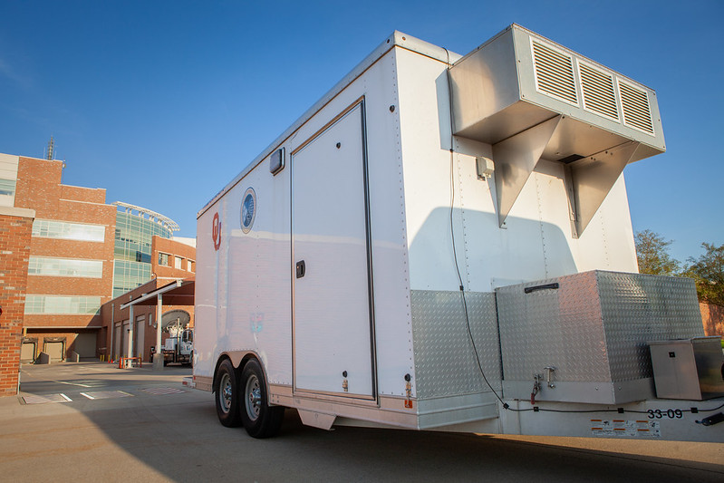
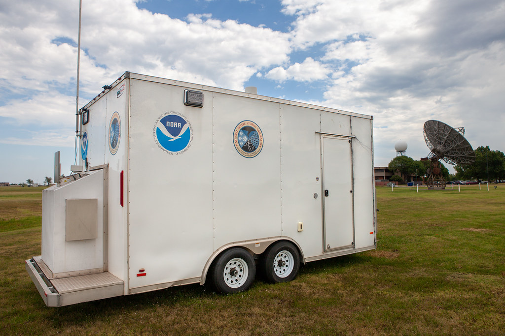
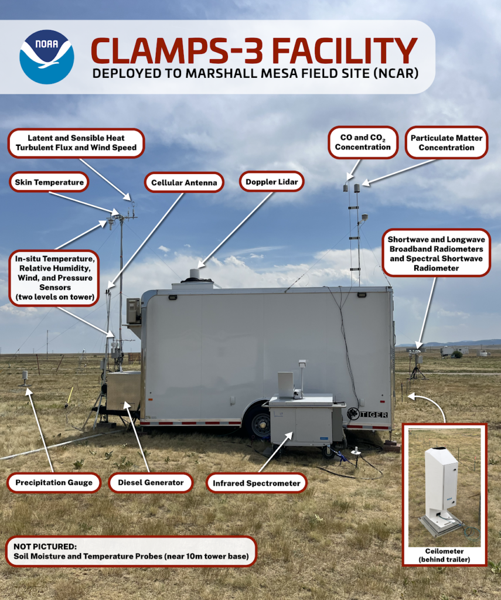

What is CLAMPS?
CLAMPS was designed to measure profiles of temperature, water vapor, and wind in the lowest several kilometers of the atmosphere at high temporal resolution. The integrated instrument suite supports research on convection initiation, boundary-layer evolution, mesoscale dynamics, wind-energy applications, fire weather, and operational nowcasting concepts.
CLAMPS1 (2015) and CLAMPS2 (2016) were developed at NOAA’s National Severe Storms Laboratory (NSSL) with University of Oklahoma partners. These sibling trailers deployed across field campaigns throughout the United States and abroad — the first decade of that record is summarized in this site’s deployment history.
CLAMPS3 and CLAMPS4 are a new generation of mobile fire-weather observing systems. Construction began in Boulder in 2024 as a collaboration among NOAA’s Air Resources Laboratory (ARL), Global Monitoring Laboratory (GML), Global Systems Laboratory (GSL), and Physical Sciences Laboratory (PSL). The systems are built for rapid deployment to wildfire-prone regions to monitor how atmospheric and land-surface conditions influence fire ignition risk and behavior, including upwind or downwind of active fires and in complex terrain. CLAMPS3 was first deployed in late July 2025 at NCAR’s Marshall Field Site near Boulder for proof-of-concept testing and continuous boundary-layer observations. CLAMPS4 deployed for the first time in June 2026 near Kennewick, Washington.
For CLAMPS1/CLAMPS2 facility documentation, retrieval methods, and science applications, see the Wagner et al. (2019) BAMS overview paper and the accompanying review manuscript that this site supports.


Bibliometrics
This site includes a reproducible bibliometric analysis of the 726-work CLAMPS literature collection (570 articles, 20 reports, 107 datasets, 29 theses) developed for the facility review paper. Summary figures, tables, and a Binder notebook reproduce the full pipeline.
Official resources
CLAMPS1 & CLAMPS2
CLAMPS1 was funded by NSF, NSSL, and the University of Oklahoma and constructed in 2015. CLAMPS2 followed in 2016 as a sibling system built by NOAA/NSSL. The two trailers share a common severe-weather profiling design: a transportable platform combining Doppler lidar, microwave radiometry, and AERI-based thermodynamic retrievals, with surface met and radiosonde support. CLAMPS1 is collaboratively maintained and operated by OU and NSSL; CLAMPS2 is maintained and operated by NSSL/CIMMS, with frequent coordinated deployments alongside CLAMPS1.
Retrieval methods, instrument history, and science applications are documented in the Wagner et al. (2019) BAMS overview paper.
Instrument suite
- Doppler lidar — scanning and staring wind profiles, turbulence, and cloud-base detection
- Microwave radiometer (MWR) — temperature and moisture profiles, including through some cloud layers
- AERI — high-spectral-resolution infrared radiance for TROPoe thermodynamic retrievals
- Surface met & radiosondes — supporting surface observations and balloon launches
CLAMPS3 & CLAMPS4 (fire weather)
The fire-weather trailers expand CLAMPS beyond the original severe-weather instrument suite. Construction began in Boulder in 2024 as a collaboration among NOAA’s Air Resources Laboratory (ARL), Global Monitoring Laboratory (GML), Global Systems Laboratory (GSL), and Physical Sciences Laboratory (PSL). GSL Senior Scientist Dave Turner — who was instrumental in the original NSSL CLAMPS design — leads development of the fire-weather facilities. Several sensors are integrated on ARL’s collapsible mobile observing tower. GSL’s Tropospheric Remotely Observed Profiling via Optimal Estimation (TROPoe) software retrieves thermodynamic profiles from infrared spectrometer data. Together, the systems observe the surface and boundary layer to improve understanding of land–atmosphere interactions relevant to fire weather and to evaluate NOAA prediction models in complex terrain.
CLAMPS3 was first deployed in late July 2025 at NCAR’s Marshall Field Site near Boulder for proof-of-concept testing. CLAMPS4 deployed in June 2026 near Kennewick, Washington. CLAMPS3/4 data are linked under Official resources above.
Instrument suite
- Doppler lidar wind profiler — vertical profiles of wind speed and direction and turbulent mixing
- Infrared spectrometer — temperature and humidity profiles (surface to ~3 km) and cloud properties via TROPoe
- Ceilometer — aerosol, smoke, and cloud-layer heights
- Surface radiometers — downward shortwave and longwave radiation
- Sonic anemometers & moisture probes — turbulent fluxes of heat, moisture, CO2, and momentum
- Surface meteorology — near-surface temperature, humidity, pressure, precipitation, and wind
- Soil moisture probes — soil moisture at multiple depths
- Trace gas & aerosol sensors — PM2.5, CO2, and CO just above the trailer
